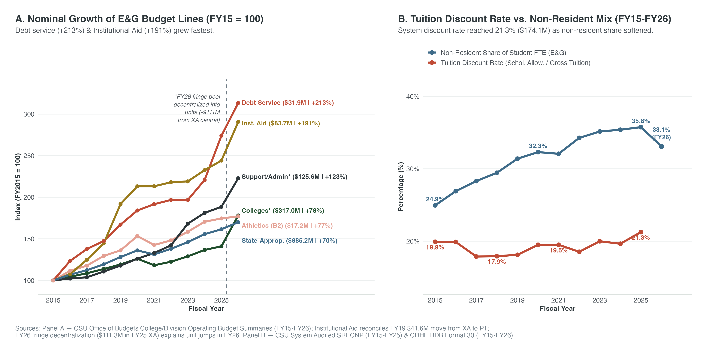

| Ledger B: Multi-Year Structural Context (Illustrative Order-of-Magnitude Ranges) | ||||
| Partitioned So Capital Debt and Operating Subsidies Are Not Double-Counted | ||||
| Group | Structural Factor | Illustrative Range | Audited Primary Anchor | Accounting Scope |
|---|---|---|---|---|
| 1 | E&G Payroll Cost Inflation, Support Mix & Incremental Budgeting | 40% – 50% (mid 45%) | Total E&G FTE grew +7.0% (3,506 -> 3,752, FY15-26, matching +6.6% Student FTE; Central General Admin Fmt 1600 = 239.1 FTE / 6.4% of E&G FTE, budgeted at 187.4 in FY27), while Academic + Student Support rose +39.9% (+224 FTE) and each 3% comp/fringe pool adds ~$33.7M/yr. | Order-of-magnitude illustration reflecting the ~70%+ personnel share of E&G expenditures, cumulative benefit/wage inflation, and fixed base carry-forwards. |
| 2 | Long-Term Capital Commitments & Debt Service | 20% – 25% (mid 22%) | CSU System Debt doubled from $671.9M (FY13) to $1,449.3M peak (FY23) / $1,330.7M (FY25) + $79.1M FY25 STRATA Laser bond. E&G Central Debt Service more than tripled from $10.2M (FY15) to $31.9M (FY26). | Captures hard bond covenants, debt service, and new building O&M/utilities that remain fixed during enrollment dips. |
| 3 | Athletics Net Operating Subsidy (Excl. Bonded Debt) | 15% – 20% (mid 17%) | Gross spending $75.24M (FY25), Direct+Indirect Univ Support $26.00M + $6.14M student fees, minus $10.93M athletic aid flow-back = ~$15.6M net institutional operating support (B2 E&G = $17.15M in FY26). | Excludes $206.96M bonded athletic debt (counted in Bucket 2 to prevent double-counting) and student fees paid outside E&G. |
| 4 | State Funding Limits, Tuition Discounting & F&A Scope | 15% – 20% (mid 16%) | FY27 State FFS+COF flat at $211.1M (23.4% of State Approp); System discount rate rose 17.9% (FY17) -> 21.3% (FY25, $174.1M); Nov. 2026 Amend. 87 (+$1.97B FY28) & Prop NN relieve K-12/Medicaid General Fund crowding but remain earmarked outside E&G instruction. | Reflects state TABOR/Medicaid crowding prior to Nov. 2026 reforms + institutional merit aid competition for non-resident students. |
| Sources: CSU Fact Book FY27, CDHE Format 30 BDBs, Audits FY15–FY25, Colorado OSA Report 2516F-B. | ||||
Ledger B: Multi-Year Structural Context & Non-E&G Research Staffing
Reconciling Faculty vs. Administrative E&G Trends—and Separating Externally Funded Research, Clinical & Auxiliary Staff
While Ledger A tracks year-over-year changes entering FY28, Ledger B examines the longer-term trends between FY15 and FY26 that narrowed CSU’s Education & General (E&G) operating flexibility. The illustrative weights below serve strictly as order-of-magnitude context paired with audited baseline figures; reasonable observers may assign different relative importance to each factor.

1. Workforce Context & Separating Externally Funded Research, Clinical & Auxiliary Staff
Why All-Funds Headcount Ratios Require Fund Disaggregation
Public comparisons that cite CSU’s all-funds staff-to-faculty ratio (~3:1 in IPEDS and campus totals) combine externally and self-funded personnel with general-fund (E&G) positions. As a Carnegie R1 land-grant institution, CSU operates major research institutes, clinical services, and state service divisions—such as Engineering’s Cooperative Institute for Research in the Atmosphere (CIRA), Warner College’s Center for Environmental Management of Military Lands (CEMML), CVMBS’s Veterinary Teaching Hospital and diagnostic laboratories, the Agricultural Experiment Station, CSU Extension, and the Colorado State Forest Service—whose personnel scale directly with external grants, federal/state contracts, and fee-for-service revenues rather than drawing on general tuition dollars.
CSU Fact Book FY27 (Tables 122–124 & 128) separates E&G general funds from Non-E&G enterprise, auxiliary, and sponsored-program funds:
| FY25 Administrative Professional FTE by Funding Source (Fact Book FY27 Table 123) | |||
| 69.7% of Campus AP Personnel Work Outside E&G on External Grants, Recharge Centers, or Auxiliaries | |||
| Funding Group | FY25 AP FTE | Share of Total AP | Funding Classification |
|---|---|---|---|
| Education & General | 1,392.6 | 30.3% | E&G General Fund (Tuition / State) |
| Other Funds | 1,159.2 | 25.2% | Non-E&G (Grants, Recharge, Auxiliaries, Other) |
| Sponsored Programs | 871.2 | 18.9% | Non-E&G (Grants, Recharge, Auxiliaries, Other) |
| Recharge Centers | 735.6 | 16.0% | Non-E&G (Grants, Recharge, Auxiliaries, Other) |
| Auxiliaries | 439.4 | 9.6% | Non-E&G (Grants, Recharge, Auxiliaries, Other) |
| Source: CSU_Factbook_FY27_2026-10-22.pdf, Table 123 (p. 142). | |||
| FY25 Administrative Professional Personnel by College/Division and Fund Source (Fact Book FY27 Table 124) | |||||
| Academic Research, Clinical & State Agency Units Are Predominantly Non-E&G; 62.1% of E&G AP Sit in Central VP Divisions & SPUR | |||||
| Organizational Group | E&G AP FTE | Non-E&G AP FTE | Total AP FTE | % Non-E&G (Externally/Self-Funded) | Share of Campus E&G AP |
|---|---|---|---|---|---|
| Central VP Divisions, Admin & SPUR | 864.8 | 451.4 | 1,316.2 | 34.3% | 62.1% |
| Warner College of Natural Resources | 29.6 | 762.9 | 792.5 | 96.3% | 2.1% |
| Veterinary Med. & Biomedical Sci. | 50.1 | 532.4 | 582.5 | 91.4% | 3.6% |
| Other Academic Colleges & Libraries | 314.5 | 205.2 | 519.7 | 39.5% | 22.6% |
| Student Affairs, Housing & Rec | 21.4 | 424.4 | 445.8 | 95.2% | 1.5% |
| Ag Sciences, AES, Extension & CSFS | 32.8 | 380.6 | 413.4 | 92.1% | 2.4% |
| Walter Scott, Jr. College of Engineering | 69.0 | 316.3 | 385.3 | 82.1% | 5.0% |
| Athletics & Compliance | 10.0 | 132.3 | 142.3 | 93.0% | 0.7% |
| Source: CSU_Factbook_FY27_2026-10-22.pdf, Table 124. | |||||
Accounting Note on Sponsored & Clinical Units: Across research-intensive colleges and state service divisions—Warner College of Natural Resources (96.3% non-E&G), Ag Sciences / AES / Extension / CSFS (92.1% non-E&G), Veterinary Medicine & Biomedical Sciences (91.4% non-E&G), Student Affairs / Housing / Rec (95.2% non-E&G), and Walter Scott, Jr. College of Engineering (82.1% non-E&G)—most AP personnel are self-supporting outside E&G. Even inside the E&G share of Central VP Divisions and Academic Colleges (1,392.2 FY25 AP FTE; 1,469.2 FY26 CDHE Non-Classified FTE), statutory job codes mix central administration with instructional staff, academic advisors, IT engineers, facilities managers, and student support personnel.
1.2 Total E&G Workforce vs. Enrollment (+7.0% vs. +6.6%) & Reconciling HR Title Shifts
Reading isolated job-classification tables without controlling for CSU’s personnel reclassifications creates two symmetrical distortions—making both faculty hiring and "general administration" hiring appear far larger than actual general-fund staffing changes:
- Total E&G Workforce Tracked Enrollment Over 11 Years: In statutory
CDHE Format 20filings (FINAL_BDB_FY15-16throughFY26-27), total filled Education & General Faculty and Staff FTE rose+7.0%(3,506.4 -> 3,751.8FTE, FY15–FY26 Actual), matching Total Student FTE growth of+6.6%(23,363.6 -> 24,906.6)—keeping the ratio virtually unchanged (6.66 -> 6.64students per E&G FTE), before dropping to3,402.5E&G FTE (-9.3%) in CSU’sFY27 Estimateafter V4 reductions. - Why Raw
E&G Admin ProCounts (+62.3%) Overstate Administrative Growth: ContinuousFact Book FY26(p. 112, restoring FY21–24 E&G State Classified rows omitted inFB27 Table 128) documents a-44.6%(-254.6FTE) reduction in E&G State Classified FTE (571.3 -> 316.7, FY15–FY25) as ~160 Facilities/trades roles moved intoRecharge Centersin FY21 and classified clerical, IT, accounting, and academic-coordinator roles converted to exemptAdministrative Professionaltitles. Combined E&G Non-Faculty Staff (Admin Pro + State Classified) grew+19.6%over ten years (1,429.4 -> 1,709.3FTE, FY15–FY25)—consistent with CDHEFormat 20/25E&G Non-Faculty Staff growth of+18.4%(1,785.6 -> 2,113.3FTE, FY15–FY26;1,854.4in FY27 Estimate). Meanwhile,FY22(3,435.8total E&G FTE) was a pandemic hiring-freeze trough belowFY20(3,676.6), inflating post-FY22 percentage comparisons. - Why
Fact Book FY27Faculty Tables (+43.3%) Reflect 2018–19 Rank Formalization—Alongside Tenure-to-CCA Composition Shifts: Following the April 2018 Faculty Manual Section E overhaul, CSU phased out legacy"Special"and"Temporary"instructor codes intoContract,Continuing, andAdjunct(CCA) tracks;FB27active-rank history tables omit the retired codes before FY19. On a continuousFact Book FY26basis (pp. 107–110), total E&G Faculty grew+13.0%(1,167.3 -> 1,319.1, FY15–FY25) as Tenured E&G Faculty declined-13.8%(739.0 -> 637.1; combined Tenured/TT+2.2%,817.3 -> 835.4) while non-tenure-trackCCAFTE grew+40.6%(336.2 -> 472.7) and E&G Graduate Assistants grew+35.4%(704.6 -> 954.3). OnCDHE Format 30, E&G Instructional/Research Faculty grew+7.2%(1,528.6 -> 1,638.5, FY17–FY26).

1.3 Staff Who Teach & Academic Support vs. Central General Administration (CDHE Formats 1100–1700)
Because "Administrative Professional" at CSU is an HR exemption category rather than an administrative job function, statutory CDHE Format 20 and Formats 1100–1700 provide the cleaner accounting split of where CSU’s 1,469.2 E&G Non-Classified (Admin Pro) FTE and 3,751.8 Total E&G FTE work in FY26 Actual (plus FY27 Estimate):
| Where CSU's 1,469.2 E&G Non-Classified (Admin Pro) FTE & 3,751.8 Total E&G FTE Work (CDHE Formats 20 & 1100–1700) | |||||||||
| 85.5% of E&G Non-Classified Staff Work in Academic Support, Teaching/Instruction, Student Services, Research & Plant; Central General Admin (Fmt 1600) = 6.4% of E&G FTE | |||||||||
| Format | Functional Area | Roles Included | FY15 AP | FY24 AP (Peak) | FY26 AP | % of E&G AP | FY27 Est. AP | FY15 -> FY26 All E&G FTE | FY26 E&G ($M) |
|---|---|---|---|---|---|---|---|---|---|
| Fmt 1400 | Academic Support | Advising, student-success coordinators, libraries & instructional tech | 274.8 | 473.9 | 484.1 | 33.0% | 480.0 | 357.1 -> 544.4 (+52.5%) | $102.8M |
| Fmt 1100 | Instruction (Non-Faculty AP) | Staff who teach, teaching-lab coordinators, clinical & dept. instructional roles | 239.5 | 313.7 | 326.4 | 22.2% | 244.8 | 2,102.8 -> 2,068.6 (-1.6%) | $302.8M |
| Fmt 1600 | Institutional Support (General Admin) | Central executive, finance/budget, HR, legal & general administration | 137.4 | 292.6 | 213.2 | 14.5% | 164.9 | 209.1 -> 239.1 (+14.4%) | $47.5M |
| Fmt 1500 | Student Services | Admissions, financial aid, registrar & student counseling/support | 145.1 | 210.2 | 204.8 | 13.9% | 237.2 | 203.7 -> 240.3 (+18.0%) | $46.6M |
| Fmt 1200-1300 | Research & Public Service (State E&G) | State-supported E&G research centers & public service staff | 105.7 | 181.6 | 190.6 | 13.0% | 132.9 | 192.0 -> 269.8 (+40.5%) | $57.9M |
| Fmt 1700 | Operation & Maintenance of Plant | Facilities engineering, maintenance & E&G physical plant operations | 26.7 | 52.2 | 50.1 | 3.4% | 32.2 | 441.7 -> 389.5 (-11.8%) | $87.6M |
| Sources: CDHE FINAL_BDB_FY15-16 through FINAL_BDB_FY26-27 (CSU General E&G Formats 20, 25, and 1100–1700). | |||||||||
Three findings stand out when separating E&G instructional/support staff from central general administration:
Academic & Student SupportLed Net Growth (+39.9%FTE, FY15–FY26): CombinedFormat 1400(Academic Support:544.4total FTE in FY26, including484.1AP FTE across college advising, libraries, and instructional technology) andFormat 1500(Student Services:240.3total FTE,204.8AP FTE across admissions, aid, registrar, and counseling) expanded+224.0FTE (560.8 -> 784.8)—representing 91% of net campus E&G headcount growth over 11 years.- Large Block of E&G AP Staff Work Directly in
Instruction(326.4FTE):Format 1100(Instruction) employs326.4Non-Classified (Admin Pro) FTE (22.2%of all E&G AP) alongside1,610.2Faculty FTE,91.0Classified FTE, and41.1Support Assistants—spanning instructors/staff who teach courses or labs, teaching-laboratory coordinators, clinical educators, and academic department instructional support (2,068.6totalFormat 1100FTE,-1.6%vs. FY15). Institutional Support(Format 1600General Administration) Is6.4%of E&G FTE and Declining Post-FY24: True central executive, budget/finance, HR, legal, and general administration totaled239.1FTE (213.2AP +26.0Classified) / $47.50M (5.4%of CSU’s$885.16MColOBS E&G budget) in FY26 Actual—a net+30.0FTE (+14.4%) above FY15 (209.1) after offsetting-45.7Classified reductions. After peaking at324.9FTE ($61.02M) in FY24,Institutional Supportfell-85.8FTE through FY26 Actual and drops further to187.4FTE ($44.10M,-10.4%below FY15) in CSU’sFY27 Estimate.
| Reconciled E&G Functional Workforce Growth vs. Student Demand and Real Net Tuition | |||
| Total E&G FTE (+7.0%) Matched Student FTE (+6.6%), While Resources Shifted Toward Academic/Student Support & Non-Tenure-Track Instruction | |||
| Metric & Primary Source | Start Period | End Period | Change (%) |
|---|---|---|---|
| Total E&G Faculty & Staff FTE (CDHE Fmt 20, FY15 -> FY26 Actual) | 3,506.4 | 3,751.8 | +7.0% |
| — E&G Instruction Total FTE (Fmt 1100: Fac + Teach AP + Class./GA) | 2,102.8 | 2,068.6 | -1.6% |
| — E&G Academic + Student Support FTE (Fmt 1400+1500, FY15 -> FY26) | 560.8 | 784.8 | +39.9% |
| — E&G General Admin / Institutional Support (Fmt 1600, FY15 -> FY26)* | 209.1 | 239.1 | +14.4% |
| Continuous Fact Book E&G Non-Faculty (AP + Classified, FY15 -> FY25) | 1,429.4 | 1,709.3 | +19.6% |
| Continuous Fact Book E&G Faculty Total (FB26 pp. 107-110, FY15 -> FY25) | 1,167.3 | 1,319.1 | +13.0% |
| — E&G Tenured Faculty Alone / CCA Non-Tenure Track (FY15 -> FY25) | 739.0 / 336.2 | 637.1 / 472.7 | -13.8% / +40.6% |
| CDHE Format 30 Total Student FTE (FY15 -> FY26 Actual) | 23,363.6 | 24,906.5 | +6.6% |
| CSU System Real Net Tuition (FY25$M, FY15 -> FY25) | $617.9M | $644.9M | +4.4% |
| *Note: Institutional Support (Fmt 1600) peaked at 324.9 FTE ($61.0M) in FY24 and estimates 187.4 FTE (-10.4% vs FY15) in FY27; Total E&G FTE estimates 3,402.5 in FY27. | |||
High-level headcount totals establish why per-employee compensation, benefits, and healthcare inflation—where a single 3% campus salary/fringe pool adds $33.7M/yr (May 13 V4 Slide 6)—alongside Student/Academic Support expansion and incremental budget carry-forwards tightened general-fund flexibility far more than raw administrative hiring alone.
Expand to view continuous FY13–FY25 Fact Book E&G Workforce Table & all 42 FY25 Table 124 Admin Pro Units
| Continuous CSU Fort Collins E&G Employee FTE History (FY13–FY25, Fact Book FY26 pp. 107–113) | |||||||||
| Retains Historical Pre-2019 CCA/Special Equivalents and FY21–24 E&G State Classified Rows Omitted in FB27 | |||||||||
| Fiscal Year | E&G Admin Pro | E&G Classified | E&G AP+Class. | E&G Tenured | E&G TT | E&G CCA (Cont.) | E&G All Faculty | E&G Grad Asst. | All E&G Incl. GA |
|---|---|---|---|---|---|---|---|---|---|
| 2013 | 628.8 | 648.9 | 1,277.7 | 695.6 | 61.8 | 288.1 | 1,057.1 | 699.7 | 3,034.5 |
| 2014 | 778.6 | 590.4 | 1,369.0 | 727.8 | 72.0 | 300.8 | 1,113.3 | 705.7 | 3,188.0 |
| 2015 | 858.1 | 571.3 | 1,429.4 | 739.0 | 78.3 | 336.2 | 1,167.3 | 704.6 | 3,301.3 |
| 2016 | 924.3 | 561.3 | 1,485.6 | 728.2 | 93.4 | 325.3 | 1,157.4 | 770.7 | 3,413.7 |
| 2017 | 959.9 | 543.4 | 1,503.3 | 737.9 | 104.6 | 347.7 | 1,199.6 | 844.6 | 3,547.5 |
| 2018 | 986.4 | 544.4 | 1,530.8 | 711.8 | 126.8 | 370.3 | 1,220.0 | 875.7 | 3,626.5 |
| 2019 | 1,035.8 | 556.8 | 1,592.6 | 685.0 | 163.8 | 385.2 | 1,244.5 | 893.0 | 3,730.1 |
| 2020 | 1,060.7 | 549.2 | 1,609.9 | 663.5 | 212.7 | 405.7 | 1,290.9 | 968.0 | 3,868.8 |
| 2021 | 1,067.9 | 389.5 | 1,457.4 | 677.6 | 187.1 | 402.8 | 1,277.4 | 956.6 | 3,691.4 |
| 2022 | 1,066.3 | 362.2 | 1,428.5 | 670.1 | 171.1 | 405.4 | 1,254.0 | 891.9 | 3,574.4 |
| 2023 | 1,214.1 | 352.1 | 1,566.2 | 669.6 | 168.2 | 444.9 | 1,290.8 | 907.4 | 3,764.4 |
| 2024 | 1,375.4 | 339.2 | 1,714.6 | 674.2 | 183.0 | 470.1 | 1,337.0 | 929.0 | 3,980.6 |
| 2025 | 1,392.6 | 316.7 | 1,709.3 | 637.1 | 198.3 | 472.7 | 1,319.1 | 954.3 | 3,982.7 |
| Source: CSU_Factbook_FY26.pdf (pp. 107–113); cross-verified against CSU_Factbook_FY27_2026-10-22.pdf. | |||||||||
| FY25 Administrative Professional FTE Across All 42 Fact Book Table 124 Units | |||||
| Ordered by E&G General-Fund FTE Footprint | |||||
| Unit | Group | E&G AP | Non-E&G AP | Total AP | Non-E&G % |
|---|---|---|---|---|---|
| VP Enrollment + Access | Central Admin, VP Divisions & SPUR | 108.9 | 1.4 | 110.3 | 1.3% |
| VP Research | Central Admin, VP Divisions & SPUR | 102.1 | 100.4 | 202.5 | 49.6% |
| VP University Operations | Central Admin, VP Divisions & SPUR | 100.4 | 67.1 | 167.5 | 40.1% |
| VP Information Technology | Central Admin, VP Divisions & SPUR | 97.3 | 26.3 | 123.6 | 21.3% |
| University Advancement | Central Admin, VP Divisions & SPUR | 90.7 | 26.6 | 117.3 | 22.7% |
| Health and Human Sciences | Academic Colleges & Libraries | 82.0 | 85.4 | 167.4 | 51.0% |
| Natural Sciences | Academic Colleges & Libraries | 76.8 | 76.1 | 152.9 | 49.8% |
| Walter Scott Jr College of Engr | Academic Colleges & Libraries | 69.0 | 316.3 | 385.3 | 82.1% |
| Business | Academic Colleges & Libraries | 68.5 | 11.6 | 80.1 | 14.5% |
| Liberal Arts | Academic Colleges & Libraries | 66.5 | 30.2 | 96.7 | 31.2% |
| VP Undergraduate Affairs | Central Admin, VP Divisions & SPUR | 53.4 | 36.2 | 89.6 | 40.4% |
| Veterinary Medicine & Biomedical Sci | Academic Colleges & Libraries | 50.1 | 532.4 | 582.5 | 91.4% |
| President's Office-Inclusive Excellence | Central Admin, VP Divisions & SPUR | 46.3 | 6.9 | 53.2 | 13.0% |
| University Marketing + Communications | Central Admin, VP Divisions & SPUR | 45.4 | 5.4 | 50.8 | 10.6% |
| SPUR | Central Admin, VP Divisions & SPUR | 40.9 | 21.9 | 62.8 | 34.9% |
| International Programs | Central Admin, VP Divisions & SPUR | 35.5 | 15.0 | 50.5 | 29.7% |
| VP Human Resources | Central Admin, VP Divisions & SPUR | 33.8 | 5.2 | 39.0 | 13.3% |
| Agricultural Sciences | Academic Colleges & Libraries | 32.8 | 146.1 | 178.9 | 81.7% |
| Warner College of Natural Resources | Academic Colleges & Libraries | 29.6 | 762.9 | 792.5 | 96.3% |
| VP Faculty Affairs | Central Admin, VP Divisions & SPUR | 28.4 | 0.9 | 29.3 | 3.1% |
| Provost + Executive Vice President | Central Admin, VP Divisions & SPUR | 25.8 | 12.4 | 38.2 | 32.5% |
| Libraries | Academic Colleges & Libraries | 20.7 | 1.9 | 22.6 | 8.4% |
| Graduate School | Central Admin, VP Divisions & SPUR | 14.7 | 0.3 | 15.0 | 2.0% |
| VP Engagement | Central Admin, VP Divisions & SPUR | 14.5 | 110.1 | 124.6 | 88.4% |
| President's Office-Athletic Compliance | Athletics & Compliance | 10.0 | 0.0 | 10.0 | 0.0% |
| President's Office-President | Central Admin, VP Divisions & SPUR | 8.9 | 0.4 | 9.3 | 4.3% |
| VPSA - Well-being-Health Network | Student Affairs / Auxiliaries | 8.7 | 103.7 | 112.4 | 92.3% |
| VPSA - Student Support & Intervention | Student Affairs / Auxiliaries | 8.6 | 18.9 | 27.5 | 68.7% |
| VP Student Affairs-VP | Central Admin, VP Divisions & SPUR | 6.7 | 8.7 | 15.4 | 56.5% |
| Accounting Pools, Central, Other | Central Admin, VP Divisions & SPUR | 5.0 | 5.2 | 10.2 | 51.0% |
| Division of Compliance | Central Admin, VP Divisions & SPUR | 4.7 | 0.0 | 4.7 | 0.0% |
| VPSA - Student Success | Student Affairs / Auxiliaries | 3.0 | 28.5 | 31.5 | 90.5% |
| VPSA - Engagement and Belonging | Student Affairs / Auxiliaries | 1.1 | 62.6 | 63.7 | 98.3% |
| Administrative Communications | Central Admin, VP Divisions & SPUR | 1.0 | 0.0 | 1.0 | 0.0% |
| Centers for Engagement | Central Admin, VP Divisions & SPUR | 0.4 | 0.0 | 0.4 | 0.0% |
| Agric Sciences-Agric Experiment Station | State Agencies / Extension | 0.0 | 55.5 | 55.5 | 100.0% |
| Board of Governors of CSU System | Central Admin, VP Divisions & SPUR | 0.0 | 1.0 | 1.0 | 100.0% |
| CSU Extension | State Agencies / Extension | 0.0 | 26.7 | 26.7 | 100.0% |
| Natural Resources-Colo State Forest Svc | State Agencies / Extension | 0.0 | 152.3 | 152.3 | 100.0% |
| President's Office-Athletics | Athletics & Compliance | 0.0 | 132.3 | 132.3 | 100.0% |
| VPSA - On and Off Campus Life | Student Affairs / Auxiliaries | 0.0 | 183.5 | 183.5 | 100.0% |
| VPSA - Well-being-Campus Recreation | Student Affairs / Auxiliaries | 0.0 | 27.2 | 27.2 | 100.0% |
2. State Funding Limits, Nov. 2026 Ballot Reforms, Tuition Discounting & Research F&A Scope

Three structural revenue constraints help explain why active teaching schedules and record external grant volume do not automatically close an E&G operating gap:
- Rising Institutional Tuition Discounting: In CSU System audited financial statements (
audits_system_fy15_fy25), scholarship allowances increased from $114.4M (19.9% discount rate in FY15; 17.9% in FY17) to $174.1M (21.3% discount rate) in FY25. Within Fort Collins E&G budgets (bdb_real_fy17_fy27), institutional aid grew from $47.2M (FY15) to $88.5M (FY26) and $96.3M estimated for FY27, offsetting part of nominal tuition rate increases (3.5%resident /4.0%NR /3.5%differential in FY27). - State Funding Constraints & November 2026 Ballot Reforms: In FY27 (
obs_state_approp_fy24_fy27), State Fee-for-Service ($161.60M) and COF stipends ($49.45M) supply $211.05M (23.4% of the $900.98M State Appropriated / E&G budget)—virtually flat versus FY26 ($210.94M). On November 3, 2026, Colorado voters approved Amendment 87 (graduated income tax generating an estimated +$1.972B in FY28 for K-12, health care/Medicaid, and early childhood), Proposition NN (raising the TABOR cap by $521.0M in FY28 while shifting-$153.1Mfrom General Government Purposes into the Children’s Account), and Proposition 137 (directing $175.0M of sporting-goods sales tax into conservation/wildfire programs, including up to $36.5M–$42.8M/yr for CSU’sColorado State Forest Service). While Amendment 87 relieves the Medicaid and K-12 crowding behind Colorado’s pre-election-$1.5BFY28 state shortfall, all three measures remain earmarked outside university E&G instruction (CSFSsits in Non-E&G agency funds). - Why Sponsored Research Grants Do Not Directly Cross-Subsidize E&G Instruction: CSU System grants and contracts reached $548.0M in FY25 (
audits) and Fort Collins Indirect Cost Recovery (IDCR) reached $76.0M (obs). Federal F&A recovery only partially reimburses dedicated research compliance, startup packages, cost-share commitments, and laboratory infrastructure rather than generating discretionary cash for general undergraduate instruction.
| CSU Fort Collins State Appropriated / E&G Revenue Mix (FY24–FY27 Original Budgets) | |||||||
| State Funding Remained Near $211M (23.4%) as Base Costs Expanded Toward $901M | |||||||
| Fiscal Year | State FFS | State COF | State Total | State % | Tuition Approp. | IDCR (F&A) | Total State Approp. Budget |
|---|---|---|---|---|---|---|---|
| 2024 | $148.35M | $48.66M | $197.02M | 24.4% | $465.93M | $65.00M | $807.79M |
| 2025 | $158.69M | $48.72M | $207.42M | 24.7% | $483.01M | $71.00M | $840.97M |
| 2026 | $161.91M | $49.04M | $210.94M | 23.8% | $508.62M | $76.00M | $885.16M |
| 2027 | $161.60M | $49.45M | $211.05M | 23.4% | $514.53M | $76.00M | $900.98M |
| Source: CSU Office of Budgets FY24–FY27 Operating Budget Summaries. | |||||||
(Comparability Note: In Office of Budgets ColOBS tables, $41.64M of institutional financial aid moved from XA Central into P1 Enrollment & Access in FY19, and ~$111.26M of centrally pooled XA Employee Fringe Benefits decentralized across academic and support units in FY26. Figure 5 isolates both transfers explicitly.)